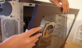
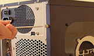
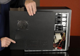
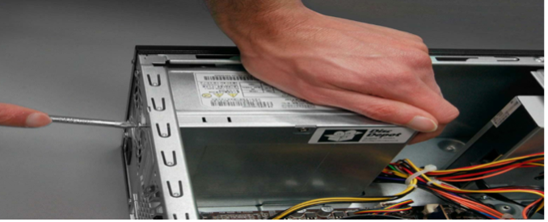
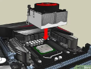
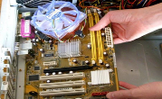
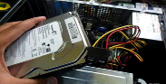
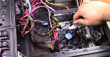
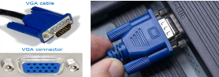
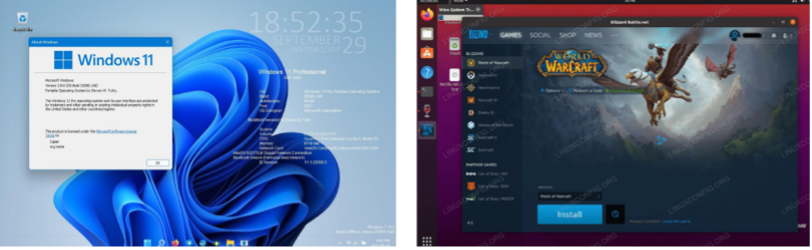

Desenvolvendo um Tutorial de Montagem¶
Nesta sessão:
Colabore para montar um computador com segurança
Desenvolva um tutorial de montagem detalhando cada etapa e documentando o processo sequencialmente com fotos e descrições.
Colabore em seus grupos para montar um computador com segurança.
Desenvolva um tutorial de montagem detalhando cada etapa e documentando o processo sequencialmente com fotos e descrições.
Modelo de Tutorial de Desmontagem e Montagem:¶
Utilize a seção Processo de Montagem do Modelo de Tutorial de Desmontagem e Montagem fornecido para organizar seu trabalho de forma clara e sistemática.
Instruções de montagem¶
A montagem de computadores é um trabalho essencial do técnico de instalação de computadores. É um processo no qual todos os componentes internos necessários para o sistema de computador são encaixados para tornar o computador funcional. Existe uma sequência adequada de fixação para cada componente no sistema.
É um processo sistemático. Comece organizando as peças do computador.
Materiais necessários:
Gabinete com fonte de alimentação instalada
Placa-mãe
CPU
Conjunto dissipador de calor/ventilador
Pasta térmica
Módulo(s) de RAM
Suportes e parafusos da placa-mãe
Pulseira e tapete antiestáticos
Kit de ferramentas
Etapa |
Instruções |
|---|---|
1. Abrir o gabinete |
   |
2. Instalar a fonte de alimentação |
 |
3. Fixar componentes na placa-mãe |
 |
4. Instalar a placa-mãe |
 |
5. Instalar as unidades internas |
 |
6. Conectar todos os cabos internos |
 |
7. Instalar as conexões de energia da placa-mãe |
|
8. Conectar cabos externos |
 |
9. Ligar o computador |
 |

Envie seu produto final¶
Revise o modelo preenchido em grupo, faça o download e envie-o no Google Classroom.

Google Classroom????